미드웨이에서의 레이더 이야기 (4) - 일본 해군은 뭘 잘못 했나?
게시: 2024-01-04T06:30:43+09:00
<물거품이 폭격기를 살리다> 지난 편을 요약하면 호넷의 급강하 폭격기들은 항로를 잘못 잡는 바람에 일본 기동부대를 찾지 못하고 허탕을 쳤고, 호넷/엔터프라이즈/요크타운의 뇌격기들은 CAP을 치고 있던 제로센들에게 일방적인 학살을 당했다는 것. 그런데 여기서 의문이 듬. 요크타운의 급강하 폭격기들은 가장 마지막으로 늦게 출발했으니 그렇다치고, 엔터프라이즈의 급강하 폭격기들은 어디서 뭘하고 있었을까?
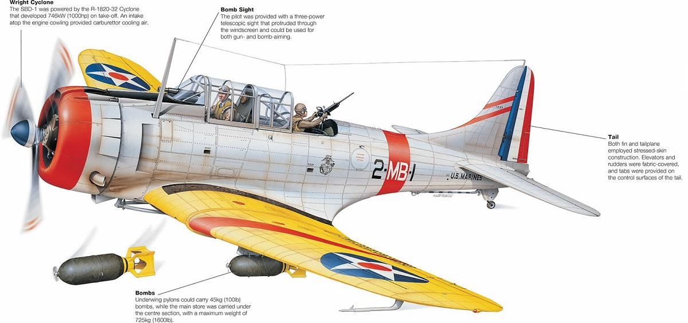
(예쁜 돈틀리스의 그림. 나중에 훨씬 더 빠르고 훨씬 더 많은 폭탄을 실을 수 있었던 Helldiver 폭격기가 나온 뒤에도 해군 조종사들은 돈틀리스를 더 선호. 이유는 저속에서의 조종성이 좋아서 항모 착함이 매우 쉬웠기 때문. 그건 단지 조종사들이 실력이 없거나 편한 것만 찾아서가 아님. 많은 함재기 조종사들이 비전투 착함 사고로 희생된 것을 생각하면 폭격기도 성능보다는 일단 안전이 제일임.)
뒤늦게 출발했던 10시경 요크타운의 뇌격기들이 학살당하고 있을 때, 엔터프라이즈의 급강하 폭격기들은 일본 항모들을 찾지 못하고 헤매고 있었음. 본함으로 돌아갈 연료가 간당간당할 정도로 떨어지자 그 편대장(Air Group Commander)인 C. Wade McClusky Jr는 이대로 돌아갈 것인지 연료 부족으로 바다 위에 불시착을 각오하고 더 찾아 헤맬 것인지를 결정해야 할 순간이 됨. 제3자 입장에서는 그냥 돌아가는 것이 쉬운 결정 같지만 전혀 그렇지 않았음. 분명히 어느 위치에 일본 항모가 있다는 정찰 보고를 받고 출발했고, 실제로 같은 브리핑을 출발한 뇌격기 편대들은 정확하게 일본 항모를 찾아냈는데, 자신이 길 안내를 한 편대만 목표물을 못 찾고 빈 손으로 돌아간다는 것은 한마디로 항공 지휘관으로서 자격이 없다는 소리나 마찬가지. 패배한 군인은 용서해도 경계에 실패한 군인은 용서가 안 된다는 이야기로 마찬가지로, 목표물에 폭탄을 명중 시키지 못한 폭격기 조종사는 용서해도 목표물을 아예 못 찾은 폭격기 조종사는 용서가 안 되는 법. 그렇다고 해서, 창피 당하는 것이 싫다고 무리해서 탐색을 고집하다가 항모의 주력 폭격편대를 연료 부족으로 모조리 바다 위에 불시착 시키는 것은 진짜 군법에 회부되어도 할 말이 없는 지휘 실패.
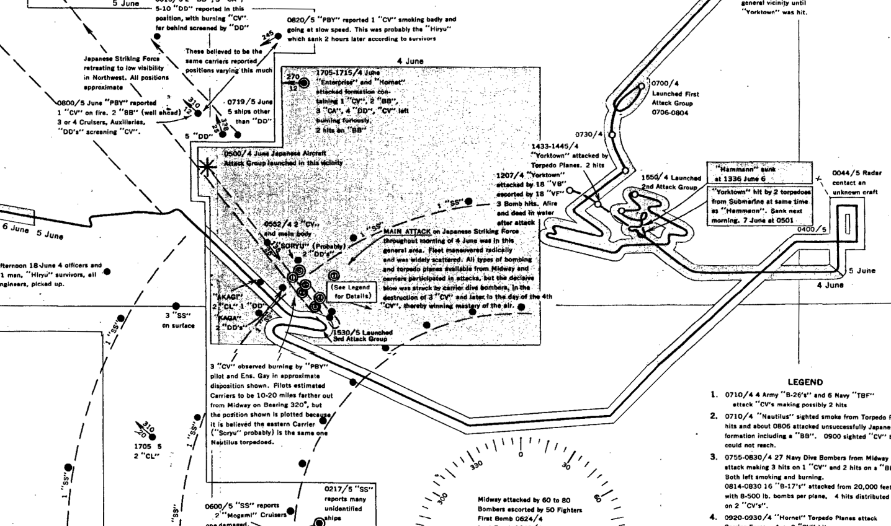
(영화를 보면 항상 돌아갈 연료가 부족하다며 징징거리는 조종사들이 결국엔 잘만 항모를 찾아 돌아감. 그게 조종사들의 엄살일까? 꼭 그렇지는 않고, 단순하게 생각하면 연료가 절반만 남으면 돌아가야 하는데도 대부분 조종사들은 연료 잔량이 절반 훨씬 아래로 떨어질 때까지 버티며 임무를 계속. 절반도 안 남은 연료로는 날아온 만큼의 거리를 못 날아갈 텐데 어떻게 귀함이 가능할까? 여기에는 몇가지 이유가 있음. (1) 갈 때는 무겁고 올 때는 가벼움 - 특히 뇌격기의 경우 무게 878kg의 어뢰를 달고 가야 함. 게다가 갈 때는 1톤에 가까운 연료를 채웠으므로 더욱 무거움. 돌아올 때는 어뢰도 없고 연료도 절반 이하로 줄었으므로 적은 연료로도 훨씬 멀리 날 수 있음.) (2) 갈 때는 저연비, 올 때는 고연비 - 당시 프로펠러 엔진들은 공기 밀도가 높은 저공에서 연비가 훨씬 좋음. 그러나 공격을 갈 때는 적함대가 어디에 있는지 찾아야 하므로 시계 확보를 위해 고공으로, 그것도 빨리 때려야 하므로 연비 무시하고 고속으로 비행. 게다가 일단 이함해서 무거운 폭탄을 달고 고공으로 올라갈 때까지 연료 소비량이 심함. 모함으로 돌아갈 때는 연비 생각하며 경제 속도로 비행하는데다 전파 유도를 받기 때문에 저공으로 날아가도 충분.
(3) 항모가 마중 옴 - 항모는 최대 30노트 가볍게 넘는 고속 선박으로서, 뒤에 밧줄 매달면 맨발로도 수상 스키가 가능한 속도를 냄. 25노트, 즉 46km/h로 달려오면 비행 시간인 3시간 동안 130km 넘게 다가올 수 있음. 참고로 엔터프라이즈와 호넷에서 공격편대를 출격시켰을 때 일본 함대와의 거리가 약 290km였음.)
답 안 나오는 고민으로 번민에 빠진 맥클러스키의 눈에 들어온 것은 희미한 물거품 항적. 이것도 이야기가 복잡한데, 오전 8시 경부터 일본 기동부대와 쫓고 쫓기며 공방을 주고 받던 잠수함 USS Nautilus (SS-168, 4천톤, 8노트)을 쫓아낸 뒤 본함대에 합류하기 위해 전속력으로 되돌아가던 일본 구축함 아라시(2천5백톤, 35노트)가 남긴 항적이었음.
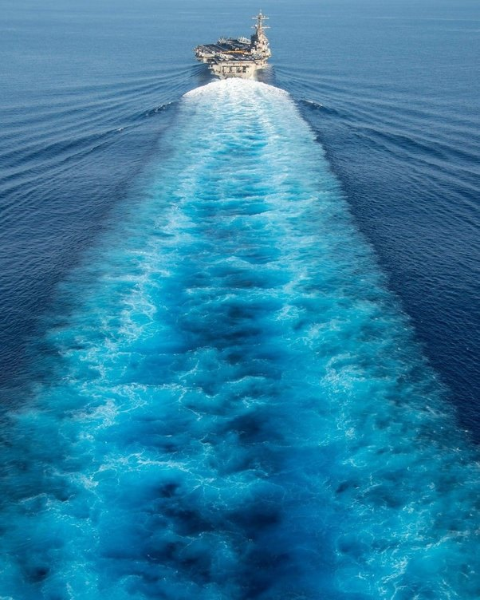
(저런 wake trail은 의외로 길게 이어져 수십 분, 약간 과장 섞어서 수 시간 동안 지속된다고. 특히 밤에는 저 물거품 속에 야광성 플랑크톤이 섞여 빛을 내는 자국이 생긴다고 함. 드문 일이지만 항법장치가 완전히 고장난 경우 저 wake trail을 운좋게 찾아서 모함에 돌아올 수 있었던 함재기들이 간혹 있었다고. 미국 대통령 중 함재기 조종사였던 아빠 부시도 WW2 때 저 wake trail 덕분에 살아서 착함한 적 있었다고 함.) 연료 부족에도 불구하고 이 항적을 따라 추격에 나선 맥클러스키 휘하 두 급강하 폭격기 편대, 즉 엔터프라이즈의 VB-6와 VS-6는 마침내 일본 기동부대를 발견. 이들보다 훨씬 늦게 출발했지만 맥클러스키와는 달리 헤매지 않고 제대로 길을 찾아온 요크타운의 급강하 폭격기 편대인 VB-3도 거의 동시에 현장에 도착.
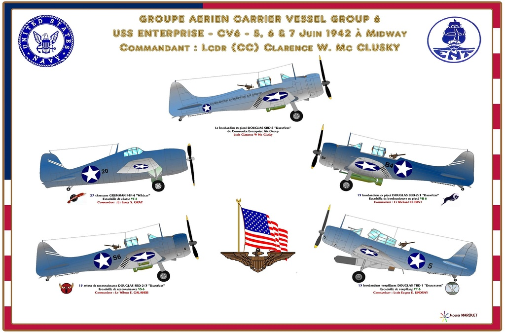
(당시 엔터프라이즈의 함재기 편대(airgroup)을 보여주는 그림. 맥클러스키는 단지 급강하 폭격기 편대장이 아니라, 엔터프라이즈 전체 항공단장이었는데, 휘하에는 1개의 Wildcat 전투기 편대, 1개의 Devastator 뇌격기 편대, 그리고 2개의 Dauntless 급강하 폭격기 편대를 데리고 있었음. 그 2개 급강하 폭격기 편대 중 하나는 폭격 편대(VB-6)이고 나머지 하나는 원래 정찰 편대(VS-6). 그림에서도 보이지만 원래 정찰 편대는 정찰 임무에 맞게 더 가벼운 500 파운드 폭탄을 장착하고 있고, 폭격 편대는 더 무거운 1000 파운드 폭탄을 장착. 2배나 무거운 폭탄을 장착한 VB-6 중 일부는 저 공격을 시작하기도 전에 연료 부족으로 추락했다고.)
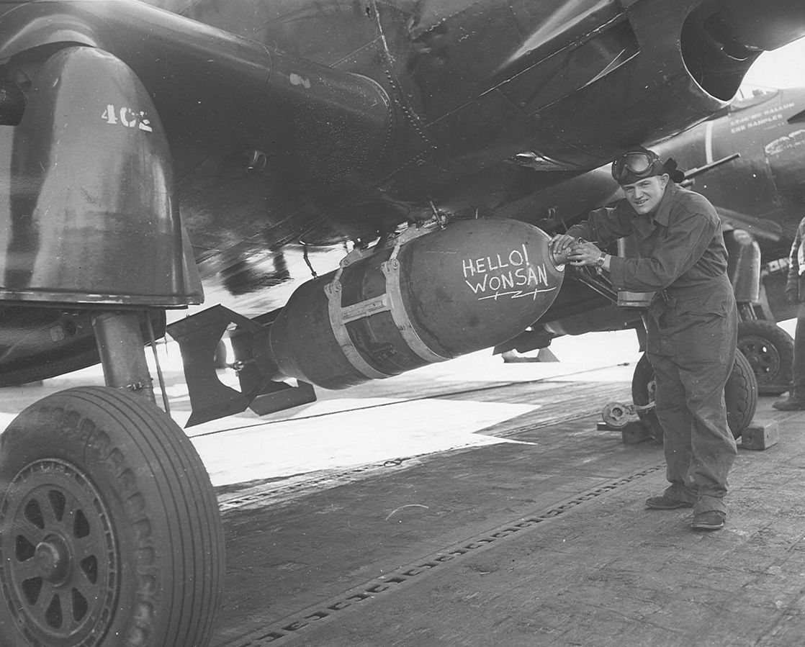
(1000 파운드 폭탄의 크기를 보여주는 사진. 1952년 원산 앞바다의 USS Essex (CV-9)에서 찍은 것. 폭탄에 '안녕 원산'이라고 낙서해놓은 것이 보임.) <스트라이커 - 수비수 - 골키퍼> 엔터프라이즈와 요크타운의 급강하 폭격기들이 나타나기 직전, 일본 기동부대 상공을 지키던 제로센 전투기들은 승리의 개가를 올리고 있었음. 쳐들어온 3개 편대 41대의 뇌격기 중 무려 34대를 격추시킨 것은 누가 봐도 일방적인 승리. 그런데 이렇게 일방적인 승리는 다소 비정상적인 것. 아무리 미해군 Devastator들이 느리다고 해도, 이렇게까지 많은 뇌격기들이 격추당하는 것이 가능한 일인가? 이건 CAP을 치고 있던 제로센들이 모조리 저공으로 내려와 어뢰 투하 전은 물론이고 어뢰를 투하하고 도망치는 디배스테이터들까지 집요하게 추격하여 쏘아 떨어뜨렸다는 소리. 전투기의 임무가 적기 격추인데, 이게 뭐 잘못된 일인가? 잘못된 일임.
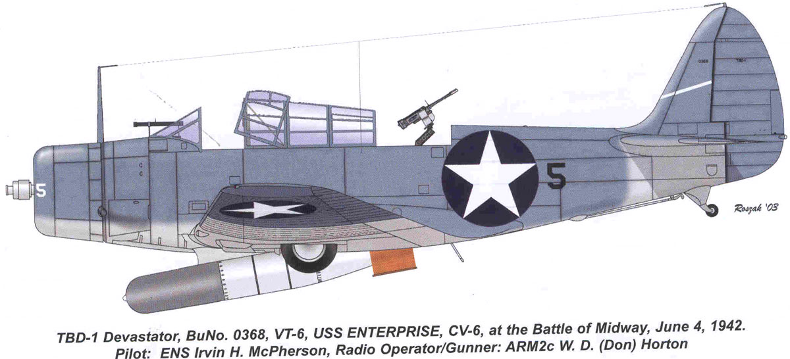
(Douglas TBD Devastator의 최대 약점은 332km/h의 느린 속도. 그나마 이건 빈 기체로 낼 수 있는 최대 속도이고 저렇게 밖으로 노출된 1935파운드짜리 Mark 13 항공 어뢰를 달면 더욱 느렸을 것. 원래 Devastator는 조종사-관측병-무선/후방사수의 3인승이지만 미드웨이에서는 저렇게 관측병을 빼고 2인승으로 출격. 역시 느린 것이 약점이어서 Slow But Deadly라는 비공식 별명으로 불리던 Douglas SDB Dauntless의 최대 속도는 410km/h.)
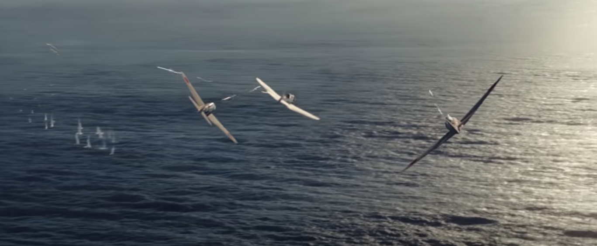
(2019년 영화 Midway의 한 장면. 퇴각하는 적기들을 저렇게 멀리까지 추격하는 것은 아직 in-play 중인 상황에서 상대 공격이 완전히 끝난 것도 아닌데 좋은 수비 하나 했다고 수비수가 관중 앞에서 세레모니 하는 꼴.) 상식적으로, 미해군이 뇌격기만 이용해서 공격을 해온다는 것이 이상하게 생각되지 않았나? 당연히 급강하 폭격기도 섞여서 날아오는 것이 정상인데, 아무리 전투의 흥분 속에 있었다고 하더라도, 급강하 폭격기들이 뒤늦게라도 날아올 것이라고 예상한 일본군 장교들이 하나도 없었던 것은 진짜 이상한 일. 바로 서너 달 전인 2월 라바울 공습에 나섰다 일본 폭격기들의 공격을 받았던 USS Lexington의 사례에서, 미해군 참모총창 Ernest J. King 제독은 "CAP 전투기들의 임무는 항모를 보호하는 것이지 퇴각하는 적기를 추격하는 것이 아니다"라며 역정을 냈음. 또 미드웨이 해전을 준비하면서 미해군 Task Force 16 (엔터프라이즈와 호넷) 및 TF 17 (요크타운)의 지휘관들은 협의 끝에 '공격 편대를 위험에 노출시키는 한이 있더라도 전투기들은 함대 방어에 집중한다'라고 결정. 위치 에너지가 중요한 항공전에서는 저공에 있는 전투기가 고공의 적기를 공격하는 것은 매우 어려운 일. 그리고 CAP 임무를 띤 전투기들은 언제 추가적으로 나타날지도 모르는 적기에 대비하여 최소한 일부는 고공을 지키고 있었어야 함. 적어도 미군 뇌격기들이 어뢰를 투하하고 도망치기 시작한 뒤에는, 최소한 몇 대의 전투기들은 고공으로 돌아가 경계를 섰어야 함. 그런데 누가 고공으로 올라가고 누가 퇴각하는 적 뇌격기들을 추격할 것인가? 그런 것을 지휘 통제하는 것이 전투기 관제사(Fighter Direction Officer)의 임무. 그러나 그걸 하려면 먼저 수십 km 밖을 내다볼 수 있는 레이더가 있어야 했고, 둘째로 전투기 조종사들과 원활히 통신할 수 있는 무전기와 무전기 사용 수칙이 있어야 했음. 레이더가 없는 것은 기술적인 문제 때문에 어쩔 수 없다고 쳐도, 그냥 일단 전투가 벌어지면 조종사들끼리 알아서 싸우라고 내버려두는 것은 명백한 전투 교리 부재의 문제.
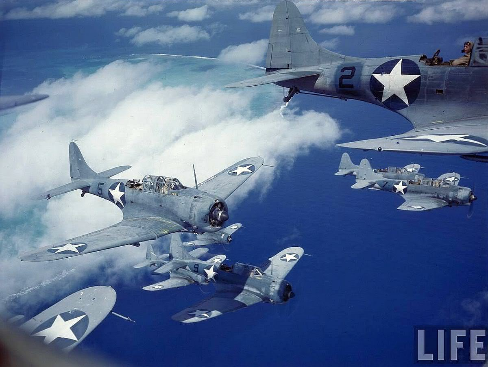
(SBD Dauntless들이 왔어요!~)
당장 제로센들이 신나게 눈 앞의 뇌격기들을 격추하고 있을 때, 이미 일본 기동부대 외곽에서 경계를 서고 있던 구축함 중 하나는 저 멀리 고공에 나타난 엔터프라이즈의 급강하 폭격기들을 발견하고 정해진 절차에 따라 그 방향으로 함포를 발사. 그러나 낮은 고도에서 뇌격기 사냥 중이던 제로센들은 그 포격을 보지 못했거나, 보았더라도 고공으로 다시 올라가기에는 늦은 상태. 만약 일본해군에 레이더가 있어서 수십 km 밖에서 접근하는 급강하 폭격기들을 보았더라면 최소한 몇 대의 제로센은 그 쪽으로 보낼 수 있었을 것. 제로센 3~4대를 투입한다고 해도 수십 대의 폭격기를 막아낼 수는 없었을 것이라고 합리화할 수도 있음. 그러나, 단지 1대의 전투기가 나타나더라도 폭격기들은 침착하게 폭탄을 투하하는 것에 큰 방해를 받음. 원래 축구에서 앞을 가로 막는 수비수 2~3명을 가볍게 젖히고 골키퍼도 뚫고 골을 넣는 것이 스트라이커이긴 하지만, 아무런 수비수 없이 골키퍼와 1대1로 상대할 경우 그 스트라이커가 득점할 가능성은 수비수 1명이 바로 옆에 따라 붙을 때와는 비교할 수 없이 높아지기 마련.
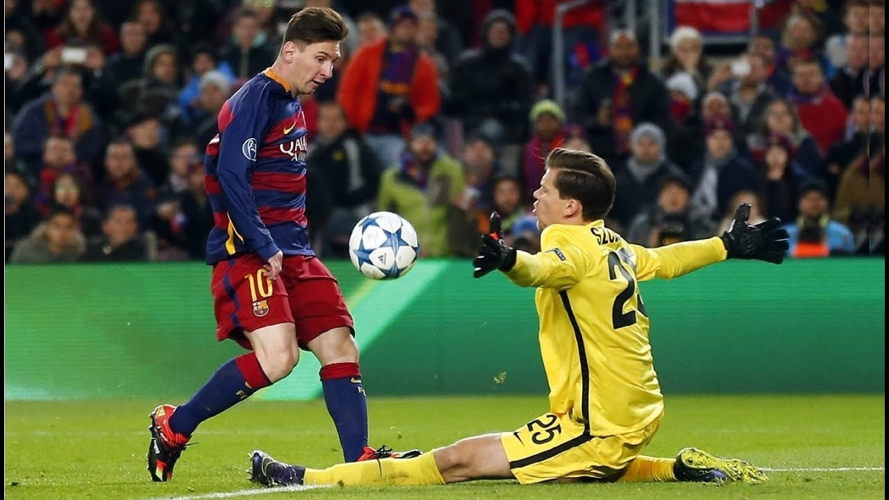
(뒤에서 수비수들이 열심히 따라붙고 있다는 것만으로도 공격수는 심리적 압박을 받기 마련인데, 아예 수비수들이 전혀 없다는 것을 알게 되면 모든 공격수가 메시급으로 변신 가능.) 게다가 골키퍼 역할을 해줘야 할 대공포 화망조차 그다지 위력적이지 않았음. 일본해군의 대공포 성능이 별로이기 떄문이기도 했지만, 이는 레이더가 없던 일본 해군의 교리상 호위함들의 임무는 항모 바로 옆에서 빽빽한 대공포 화망을 펼치는 것보다는 저 멀리 외곽에 위치하여 레이더 대신 눈으로 적기의 내습을 탐지하는 것이었기 때문. 그 결과는 정말 역사상 유사한 사례를 찾기 힘든, 단 한 번의 공습에 3척의 항모가 한꺼번에 완파되는 참혹한 상황. 이는 미해군의 승리라기 보다는 멍청하기 짝이 없는 일본해군의 패배.
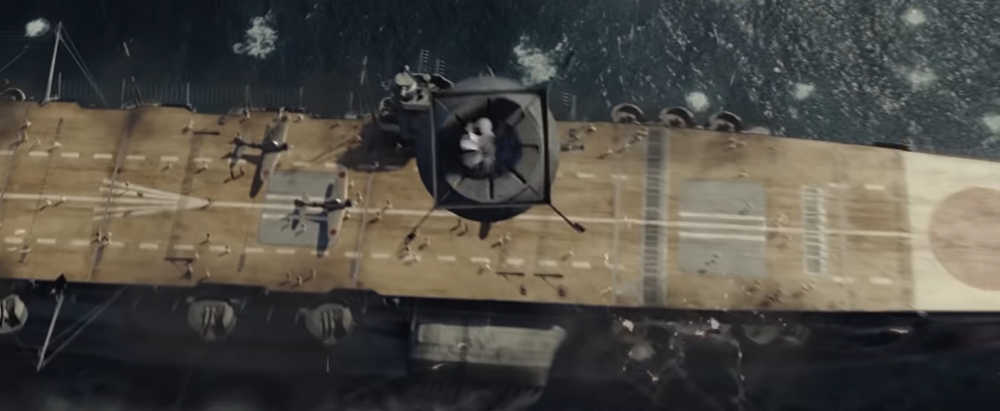
(개인적으로 미국 훃아들이 가장 멋있어 보일 때는 일본군 뚜까 팰 때임.)
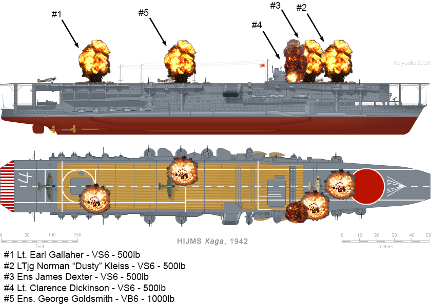 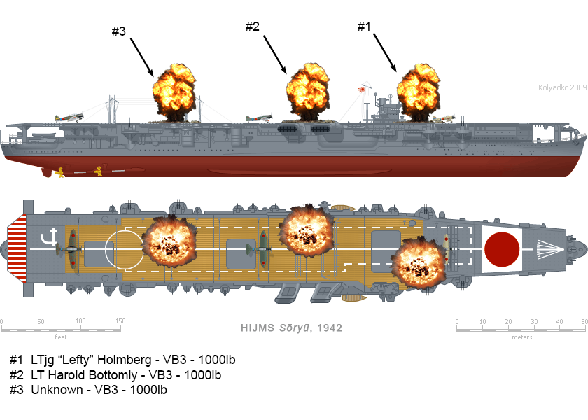 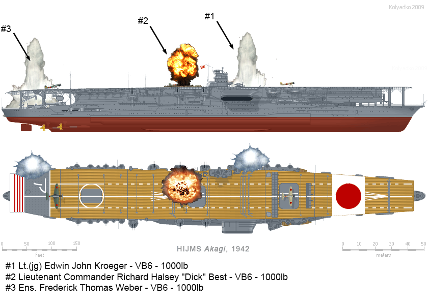
(순식간에 날아간 3척의 일본 항모가 각각 어디에 어떤 폭탄을 맞았는지 보여주는 그림. 저렇게 하얀 물기둥을 일으키며 아슬아슬하게 빗나간 폭탄들을 near-miss, 즉 지근탄이라고 부르는데, 저것들도 물 속에서 폭발하여 항모에 상당한 피해를 줌. 많은 경우 함체를 우그러뜨려 물이 새게 만들던가 항모의 조타키를 망가뜨리거나 함.)